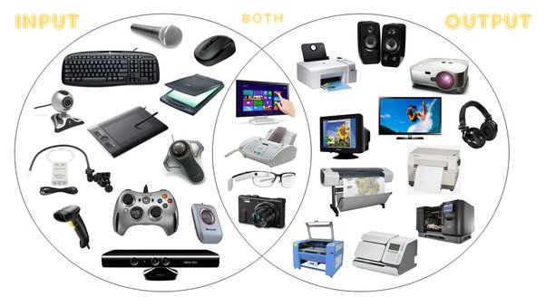
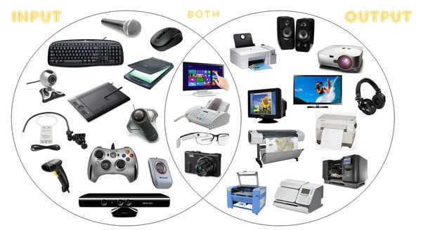

When asked to picture a computer, here is possibly nobody who will do so without including the ubiquitous keyboard and mouse.
In fact, many of us would probably recall the peripheral first and the rodent later, upon hearing the word mouse a quick google search will reveal how true this is.
But computers were not invented with input devices in mind, atleast not the ones we use now.
With the ease of gliding our hands on our touchscreens or directly talking to our devices, it is very easy to forget the evolution of input devices in the last century since computing devices were introduced.
From punchcards to motion detection, let us see how we arrived here.

